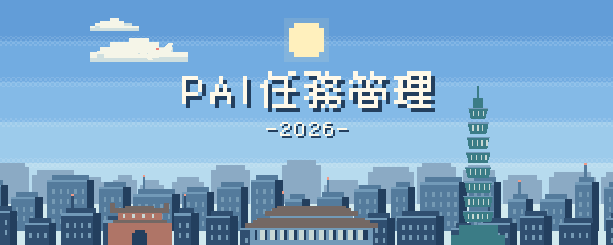
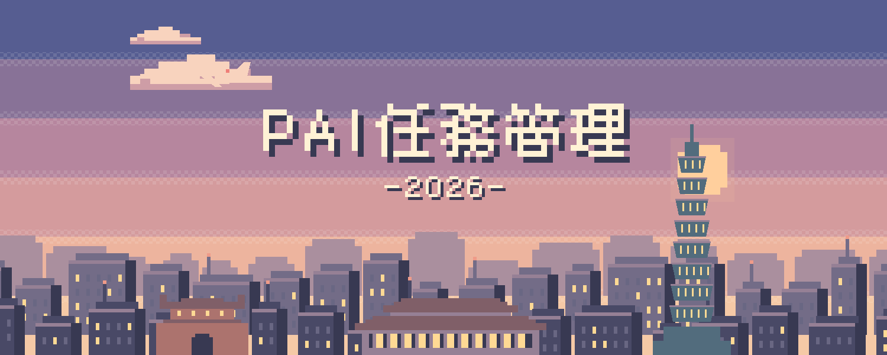
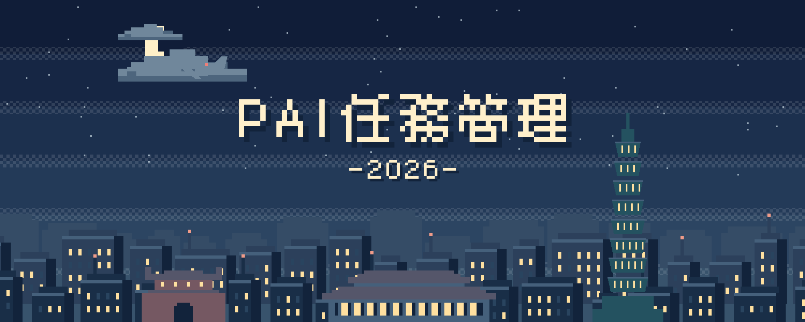

<!doctype html>
<html lang="zh-Hant">
<meta charset="utf-8">
<meta name="viewport" content="width=device-width,initial-scale=1">
<meta name="color-scheme" content="light dark">
<title>像素城市 · 三個時刻</title>
<style>
:root{color-scheme:light dark;--paper:#f4f1e9;--ink:#293f50;--muted:#5b6e79;--line:#cdd3d1;--space:24px}
@media(prefers-color-scheme:dark){:root{--paper:#17212b;--ink:#eee9de;--muted:#abb9c1;--line:#3c4d5a}}
*{box-sizing:border-box}body{margin:0;background:var(--paper);color:var(--ink);font-family:system-ui,sans-serif;padding:48px var(--space)}
main{max-width:1200px;margin:auto}header{margin-bottom:48px}p{color:var(--muted);line-height:1.7;font-size:16px}
h1{font-size:32px;margin:12px 0;font-weight:600;letter-spacing:.04em}header span{font:12px ui-monospace,monospace;letter-spacing:.14em}
figure{margin:0 0 40px}img{display:block;width:100%;aspect-ratio:2.5;object-fit:cover;image-rendering:pixelated}
figcaption{display:flex;justify-content:space-between;gap:16px;padding:12px 0;border-bottom:1px solid var(--line);font-size:14px}
a{color:inherit;text-underline-offset:4px}footer{margin-top:48px;font-size:14px;color:var(--muted)}
@media(max-width:600px){body{padding:28px 16px}h1{font-size:24px}header{margin-bottom:28px}}
</style>
<main>
<header><span>PIXEL TAIPEI / PAI 2026</span><h1>PAI任務管理</h1><p>雲慢慢走，飛機偶爾經過。101、北門與車站，陪你整理每一天。</p><p><a href="embed.html">開啟隨台灣時間切換的嵌入版 ↗</a></p></header>
<figure><figcaption><span>01 / 白天 · 06:00–17:00</span><a href="day.svg" download>下載 SVG</a></figcaption></figure>
<figure><figcaption><span>02 / 黃昏 · 17:00–19:00</span><a href="dusk.svg" download>下載 SVG</a></figcaption></figure>
<figure><figcaption><span>03 / 夜晚 · 19:00–06:00</span><a href="night.svg" download>下載 SVG</a></figcaption></figure>
<footer>標題與2026為固定圖形。嵌入版依台灣時間自動選擇場景；下列單張SVG為固定配色。系統開啟「減少動態效果」時，畫面會靜止。</footer>
</main>
</html>
